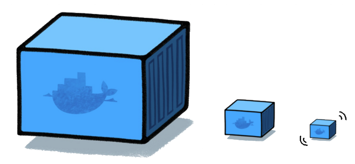
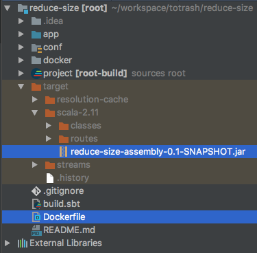

Docker: Size does matter
...At least for containers
Presentation by @samudurand
A quick overview
- Docker and Containers
- Real life illustration
- Why does image size matter ?
- How to do it ?
- Improving build speed
What is docker ?
A very popular Container platform


Images & Containers
An image is a lightweight object that includes everything needed to run a piece of software
=> immutable state
A container is a runtime instance of an image
Layers

Dockerfile
FROM node:boron
# Create app directory
RUN mkdir -p /usr/src/app
WORKDIR /usr/src/app
# Install app dependencies
COPY package.json /usr/src/app/
RUN npm install
# Bundle app source
COPY . /usr/src/app
EXPOSE 8080
CMD [ "npm", "start" ]
Real life illustration

Why reduce the Image size
Faster Uploads/Downloads
- Upload
- Limited bandwidth
- Quicker hotfix deployment
- Download
- Faster CI / CD
- Faster recovery, spin up of instances
Data Transfer & Security
- Reduce costs
- Reduce overall traffic
- Less unused tools
=> less weapons available

How ?
The secret is in the recipe
Useful commands
docker images
sam@Sam-Cake-Laptop ~ $ docker images
REPOSITORY TAG IMAGE ID CREATED SIZE
openjdk 8-jre 2b1609ecd02f 2 weeks ago 310MB
mysql 5.7.17 9546ca122d3a 6 weeks ago 407MB
docker history [IMAGE_NAME]:[TAG]
sam@Sam-Cake-Laptop ~ $ docker history openjdk:8-jre
IMAGE CREATED CREATED BY SIZE
2b1609ecd02f 2 weeks ago /bin/sh -c /var/lib/dpkg/info/ca-certifica... 419kB
<-missing-> 2 weeks ago /bin/sh -c set -ex; apt-get update; apt... 141MB
<-missing-> 3 weeks ago /bin/sh -c #(nop) ENV CA_CERTIFICATES_JAV... 0B
<-missing-> 3 weeks ago /bin/sh -c #(nop) ENV JAVA_DEBIAN_VERSION... 0B
<-missing-> 3 weeks ago /bin/sh -c #(nop) ENV JAVA_VERSION=8u121 0B
<-missing-> 3 weeks ago /bin/sh -c #(nop) ENV JAVA_HOME=/usr/lib/... 0B
<-missing-> 3 weeks ago /bin/sh -c { echo '#!/bin/sh'; echo 's... 87B
<-missing-> 3 weeks ago /bin/sh -c #(nop) ENV LANG=C.UTF-8 0B
<-missing-> 3 weeks ago /bin/sh -c echo 'deb http://deb.debian.org... 55B
<-missing-> 3 weeks ago /bin/sh -c apt-get update && apt-get insta... 1.18MB
<-missing-> 3 weeks ago /bin/sh -c apt-get update && apt-get insta... 44.6MB
<-missing-> 3 weeks ago /bin/sh -c #(nop) CMD ["/bin/bash"] 0B
<-missing-> 3 weeks ago /bin/sh -c #(nop) ADD file:712c48086043553... 123MB
Our starting point
A very simple Play app

FROM openjdk:8-jre
LABEL description="Simple demo app"
LABEL category="article-demo"
LABEL git.repo="https://github.com/firens/docker-reduce-size"
COPY target ./target
RUN apt-get update
RUN apt-get install -y vim
EXPOSE 9000
EXPOSE 5005
ENV APP_VERSION 0.1
ENV FULL_APP_VERSION ${APP_VERSION}-SNAPSHOT
ENTRYPOINT exec java -jar -Dplay.crypto.secret=abcdefghijk
target/scala-2.11/reduce-size-assembly-${FULL_APP_VERSION}.jar
Our starting point
sam@Sam-Cake-Laptop reduce-size $ docker images
REPOSITORY TAG IMAGE ID CREATED SIZE
reduce-size latest 4f94b19cd0a4 2 minutes ago 499MB
sam@Sam-Cake-Laptop reduce-size $ docker history reduce-size
IMAGE CREATED CREATED BY SIZE
4f94b19cd0a4 3 minutes ago /bin/sh -c #(nop) ENTRYPOINT ["/bin/sh" "... 0B
29a4ffd6fa2a 3 minutes ago /bin/sh -c #(nop) ENV FULL_APP_VERSION=0.... 0B
2d38e0523b6f 3 minutes ago /bin/sh -c #(nop) ENV APP_VERSION=0.1 0B
eb2098b61835 3 minutes ago /bin/sh -c #(nop) EXPOSE 5005/tcp 0B
1b2c0129b248 3 minutes ago /bin/sh -c #(nop) EXPOSE 9000/tcp 0B
55cfe87f1d44 15 minutes ago /bin/sh -c apt-get install -y vim 29.9MB
c4c080d067c3 15 minutes ago /bin/sh -c apt-get update 11.3MB
3e4d5ea89439 15 minutes ago /bin/sh -c #(nop) COPY dir:48aa4cbcc1f9dd3... 147MB
41429e6e5a6b 15 minutes ago /bin/sh -c #(nop) LABEL git.repo=https://... 0B
58282ed5c22e 15 minutes ago /bin/sh -c #(nop) LABEL category=article-... 0B
2abf60129be9 15 minutes ago /bin/sh -c #(nop) LABEL description=Simpl... 0B
2b1609ecd02f 3 weeks ago /bin/sh -c /var/lib/dpkg/info/ca-certifica... 419kB
...
<-missing-> 3 weeks ago /bin/sh -c apt-get update && apt-get insta... 44.6MB
<-missing-> 3 weeks ago /bin/sh -c #(nop) ADD file:712c48086043553... 123MB
We will attempt to reduce this initial size of 499 MB
Step 1: Cleanup
sam@Sam-Cake-Laptop reduce-size $ docker images
REPOSITORY TAG IMAGE ID CREATED SIZE
reduce-size latest 879525d6d046 About a minute ago 499MB
<-none-> <-none-> 4f94b19cd0a4 23 hours ago 499MB
... no difference ?
sam@Sam-Cake-Laptop reduce-size $ docker history reduce-size
IMAGE CREATED CREATED BY SIZE
879525d6d046 4 minutes ago /bin/sh -c #(nop) ENTRYPOINT ["/bin/sh" "... 0B
41ec75122bb1 4 minutes ago /bin/sh -c #(nop) ENV FULL_APP_VERSION=0.... 0B
fb8ef11b3abf 4 minutes ago /bin/sh -c #(nop) ENV APP_VERSION=0.1 0B
6402b9aa3283 4 minutes ago /bin/sh -c #(nop) EXPOSE 5005/tcp 0B
456dca6c9792 4 minutes ago /bin/sh -c #(nop) EXPOSE 9000/tcp 0B
af7d97531f4d 4 minutes ago /bin/sh -c rm -rf /var/lib/apt/lists/* /tm... 0B
f66ba9e8b835 5 minutes ago /bin/sh -c apt-get clean 0B
55cfe87f1d44 23 hours ago /bin/sh -c apt-get install -y vim 29.9MB
c4c080d067c3 23 hours ago /bin/sh -c apt-get update 11.3MB
3e4d5ea89439 23 hours ago /bin/sh -c #(nop) COPY dir:48aa4cbcc1f9dd3... 147MB
41429e6e5a6b 23 hours ago /bin/sh -c #(nop) LABEL git.repo=https://... 0B
58282ed5c22e 23 hours ago /bin/sh -c #(nop) LABEL category=article-... 0B
2abf60129be9 23 hours ago /bin/sh -c #(nop) LABEL description=Simpl... 0B
...
The cleanup does not seem to have any effect... Why ?
Step 1: Cleanup
Always remember
"The size of an image is the sum of the size of its layers"
And
"A layer content is immutable"
A previous layer size cannot be modified by a new layer !
Step 2: Merging layers
- Installation and Cleanup must happen at the same time
- Less layers means also:
- Clearer and better organisation
- Less network requests when uploading/downloading
- Maximum of 127 layers
Step 2: Result
sam@Sam-Cake-Laptop reduce-size $ docker images
REPOSITORY TAG IMAGE ID CREATED SIZE
reduce-size latest 29aff50c3e88 About an hour ago 488MB
<-none-> <-none-> 879525d6d046 20 hours ago 499MB
<-none-> <-none-> 4f94b19cd0a4 44 hours ago 499MB
sam@Sam-Cake-Laptop reduce-size $ docker history reduce-size
IMAGE CREATED CREATED BY SIZE
4061bb2144c5 About an hour ago /bin/sh -c #(nop) ENTRYPOINT ["/bin/sh" "... 0B
41b06bd9df40 About an hour ago /bin/sh -c #(nop) ENV FULL_APP_VERSION=0.... 0B
1a770e688730 About an hour ago /bin/sh -c #(nop) ENV APP_VERSION=0.1 0B
d5905f0e4747 About an hour ago /bin/sh -c apt-get update && apt-get i... 29.9MB
394199425370 About an hour ago /bin/sh -c #(nop) COPY dir:48aa4cbcc1f9dd3... 147MB
a0cb4f8c7b47 About an hour ago /bin/sh -c #(nop) LABEL description=Simpl... 0B
...
Fewer layers and 11MB smaller!
Step 3: Result
sam@Sam-Cake-Laptop reduce-size $ docker images
REPOSITORY TAG IMAGE ID CREATED SIZE
reduce-size latest 8a777494d3ad 35 seconds ago 379MB
<-none-> <-none-> 29aff50c3e88 4 hours ago 488MB
<-none-> <-none-> 4f94b19cd0a4 46 hours ago 499MB
<-none-> <-none-> 854dc64df997 46 hours ago 499MB
sam@Sam-Cake-Laptop reduce-size $ docker history reduce-size
IMAGE CREATED CREATED BY SIZE
8a777494d3ad 42 seconds ago /bin/sh -c #(nop) ENTRYPOINT ["/bin/sh" "... 0B
4f99232acbb8 42 seconds ago /bin/sh -c #(nop) EXPOSE 5005/tcp 9000/tcp 0B
38a8f1427041 42 seconds ago /bin/sh -c apt-get update && apt-get i... 29.9MB
8363cf1632ff 2 hours ago /bin/sh -c #(nop) COPY file:f69d12f7e30135... 38.3MB
261e9b57c9e2 2 hours ago /bin/sh -c #(nop) ENV FULL_APP_VERSION=0.... 0B
b65d6b169eb7 2 hours ago /bin/sh -c #(nop) ENV APP_VERSION=0.1 0B
a0cb4f8c7b47 4 hours ago /bin/sh -c #(nop) LABEL description=Simpl... 0B
...
More than a 100MB saved this time
Step 4: Base Image
Images are often based on common Linux distributions
- Debian
- Ubuntu
We need to use something smaller
- Alpine
- Or even Scratch